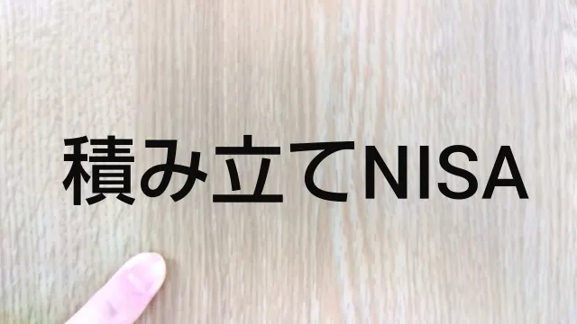

【今さら聞けない】NISA（つみたて投資枠）の始め方と銘柄選びのポイントを解説


「NISAは聞いたことがあるけどよくわからない」
「積み立てで投資することは知っているけど…」
「何かメリットはあるの？」
NISAに興味がある方は、このようなお悩みをお持ちではないでしょうか。
NISAは投資で得た利益が非課税になるお得な制度で、とくに「つみたて投資枠」は、少額からコツコツ増やしていきたい方におすすめです。
しかし、難しそうでなかなか始められない方もいるかもしれません。
 まつお
まつおこの記事では、FPの私が、NISAのつみたて投資枠についてわかりやすく解説します。
制度の仕組みから具体的な始め方や金融機関の選び方、銘柄選びのポイントまで、初心者の方がつまずきやすい以下の点をピックアップしました。
- 始める前に知っておきたいこと
- 始め方の手順
- 金融機関の選び方
- 銘柄選びのポイント
- 始める際の注意点
この記事を読めば、NISAのつみたて投資枠について理解でき、将来の資産形成の一歩を踏み出せるようになるので、参考にしてみてください。
NISA（つみたて投資枠）を始める前に知っておきたいこと
「つみたて投資枠」は、長期的な資産形成を目的とした投資制度です。この制度を活用する前に、いくつかの重要なポイントを押さえておく必要があります。
はじめに以下の項目について、おさらいしておきましょう。
- 年間に120万円まで積み立て可能
- 非課税期間は無制限
- つみたて投資枠と成長投資枠の違い
- NISAとiDeCo（イデコ）の違い
1.年間に120万円まで積み立て可能
つみたて投資枠では、年間120万円まで積み立て投資が可能です。
毎月コツコツ積み立てることで、無理なく投資を始められます。
また、少額からスタートできるため、投資初心者でも安心して始めやすいのが特徴です。
まつお負担にならない金額から始めるとよいでしょう。
非課税のメリットを最大限に生かし、着実に将来に向けた資産形成を進められます。
2.非課税期間は無制限
NISAのつみたて投資枠で得た利益には、税金がかかりません。
これを「非課税制度」と言います。
非課税の期間は定めがないため、長期的な資産形成に最適です。
ただし、非課税の保有限度額は、全体で1,800万円までと定められています。
上限額を超えないように、計画的に投資しましょう。
3.つみたて投資枠と成長投資枠の違い
| 項目 | つみたて投資枠 | 成長投資枠 |
|---|---|---|
| 投資可能金額（年間） | 120万円 | 240万円 |
| 非課税保有期間 | なし | なし |
| 非課税保有限度額 | 1,800万円（うち成長投資枠は1200万円） | |
| 購入のタイミング | 定期的 | いつでも可 |
| 対象商品 | 一定の投資信託 | 上場株式・投資信託など |
| 対象年齢 | 18歳以上 | 18歳以上 |
NISAには「つみたて投資枠」と「成長投資枠」の2種類があり、それぞれ特徴が異なります。
「つみたて投資枠」は積立投資に特化しており、長期の分散投資に適した一定の投資利益のみが対象です。
一方「成長投資枠」は、上場株式や投資信託などから選択でき一括投資もできます。
年間投資枠も、つみたて投資枠が120万円なのに対し、成長投資枠は240万円まで可能です。
4.NISAとiDeCo（イデコ）の違い
NISAとiDeCo（個人型確定拠出年金）は、どちらも税制優遇のある制度ですが、目的や仕組みが異なります。
NISAは、比較的自由にお金を引き出せるため、ライフプランに合わせた柔軟な資産形成が可能です。
一方、iDeCoは原則60歳まで引き出せないため、老後資金の準備に適しています。
また、税制優遇の仕組みも異なり、NISAは運用益のみが非課税ですが、iDeCoは掛金の全額が所得控除の対象となり、運用益も非課税となるのが特徴です。
NISA（つみたて投資枠）の始め方4ステップ
NISA（つみたて投資枠）を始めるには、いくつかの手順を踏む必要があります。
以下のステップに沿って進めることで、無理なく資産形成を始められるでしょう。
- 1.金融機関を選ぶ
- 2.口座を開設する
- 3.積立金額を決める
- 4.投資する金融商品を選ぶ
それでは、各ステップの詳細を見ていきましょう。
STEP1：金融機関を選ぶ
最初に行うべきことは、NISA口座を開設する金融機関の選択です。
銀行や証券会社、ネット証券など、さまざまな選択肢がありますが、それぞれに特徴があります。
銀行は、普段使っている預金口座と連携しやすく、店頭での相談も可能です。
一方、証券会社やネット証券は取扱商品数が多く、手数料が比較的安いメリットがあります。
まつお取引のしやすさやコストを重視するなら、ネット証券がおすすめです。
STEP2：口座を開設する
金融機関を選んだら、次はNISA口座の開設手続きです。
多くの金融機関では、オンラインで簡単に口座開設ができます。
口座開設に必要な書類は、主に以下の2つです。
- 本人確認書類（運転免許証、健康保険証など）
- マイナンバー（マイナンバーカード、通知カードなど）
これらの書類をスマートフォンで撮影してアップロードするだけで、手続きが完了する金融機関も多くあります。
まつお手続き自体は、20分程度で終わるのが一般的です。
なお、NISA口座は、18歳以上の日本居住者であれば開設できます。
口座開設時期は年中いつでも可能ですが、その年の非課税枠を最大限活用するには、早めの開設がおすすめです。
STEP3：積立金額を決める
口座開設が完了したら、次は積立金額を決めましょう。
つみたて投資枠の年間投資上限額は120万円です。月々に換算すると、最大10万円まで積み立てができます。
ただし、必ずしも上限額まで投資する必要はありません。
自分の収入や生活スタイルに合わせて、無理のない金額を設定することが大切です。
たとえば、月々3,000円から始めて、慣れてきたら徐々に増やしていく方法もあります。
STEP4：投資する金融商品を選ぶ
積立金額が決まったら、実際に投資する金融商品を選択しましょう。
つみたて投資枠で購入できる商品は、金融庁が定めた基準を満たした投資信託に限定されています。
主な商品タイプは以下の3つです。
- インデックス型投資信託
- アクティブ型投資信託
- ETF（上場株式投資信託）
初心者の方には、コストが低く運用方針が明確なインデックス型投資信託がおすすめです。
まつおとくに、国内株式や世界株式に投資するファンドは人気があります。
多くの金融機関では、商品のランキングや詳細な情報を提供しているので、参考にしながら自分に合った商品を選びましょう。
NISA（つみたて投資枠）を始める際の金融機関の選び方
NISA（つみたて投資枠）を始める際、適切な金融機関を選ぶことは非常に重要です。
以下の5つのポイントを考慮して、自分に最適な金融機関を選びましょう。
- 口座開設や購入方法のわかりやすさ
- 商品の選びやすさ
- 引き落とし方法
- アプリやサービスの使いやすさ
- いくらから始められるか
それぞれについて詳しく解説します。
1.口座開設や購入方法のわかりやすさ
「つみたて投資枠」を始める際は、口座を開設する必要があります。
金融機関によって手続きの複雑さが異なるため、初心者でもわかりやすい金融機関を選ぶとよいでしょう。
多くのネット証券では、スマートフォンで本人確認書類を撮影してアップロードするだけで、口座開設の手続きが完了します。
一方、銀行では既存の口座と連携させることで、より簡単に口座開設ができる場合も多いです。
まつお購入についても、アプリ上でできると使いやすいでしょう。
とくに、積立投資の設定や変更が簡単にできるかどうかは重要なポイントです。
2.商品の選びやすさ
NISA（つみたて投資枠）で購入できる商品は、投資信託に限定されています。
しかし、商品数や種類は豊富です。
たとえば、2025年3月時点ではインデックス型投資信託が254本、アクティブ型投資信託が56本、ETFが8本と合計318本の商品が対象となっています。
これだけ多くの商品から選ぶのは、初心者にとって難しいかもしれません。
そのため、商品の絞り込み機能やわかりやすい商品説明、ランキング情報などを提供している金融機関を選ぶとよいでしょう。
3.引き落とし方法
つみたて投資を継続するためには、引き落とし方法の利便性も重要です。
主な引き落とし方法には「銀行口座からの自動引き落とし」と「クレジットカード決済」があります。
銀行口座からの自動引き落としは、毎月決まった日に指定した金額が引き落とされるため、計画的な積立が可能です。
一方、クレジットカード決済を利用すると、ポイントが貯まるなどの特典が得られる場合があります。
まつお自分に合った引き落とし方法を選べる金融機関を選びましょう。
4.アプリやサービスの使いやすさ
近年は、スマートフォンアプリで投資を行う人が増えています。
使いやすいアプリがある金融機関を選べば、資産管理や投資状況の把握がしやすくなります。
たとえば、SBI証券の「かんたん積立アプリ」では、投資信託の保有状況やリターンの確認、新規の積立設定や変更をアプリ上で行えるのが特徴です。
また、アプリの機能だけでなく、ウェブサイト上でのサービスの使いやすさも欠かせません。
資産状況のグラフ表示や、わかりやすいレポート機能などがあると状況がすぐにわかります。
5.いくらから始められるか
NISA（つみたて投資枠）の魅力の一つは、少額から始められることです。
金融機関によって最低投資金額が異なるため、自分の予算に合わせて選びましょう。
多くのネット証券では、月々100円から積立を始められます。
まつお銀行では最低1,000円からの場合が多いようです。
初めてで投資に不安や抵抗を感じる場合でも、100円なら気軽にスタートできるでしょう。
自分の収入や生活スタイルに合わせて、無理のない金額を設定することが大切です。
NISA（つみたて投資枠）を始める際の銘柄選びのポイント
効果的な資産形成を実現するためには、投資信託の選び方が重要です。
とくに注目すべき、以下の3つのポイントを解説します。
- 投資対象を決める
- 運用コストが低い商品を選ぶ
- 純資産総額が大きい商品を選ぶ
これらのポイントを押さえることで、リスクを抑えながら安定した運用が可能です。
1.投資対象を決める
銘柄選びで重要なのは、投資対象を明確にすることです。
国内株式や世界株式、債券の特性を理解し、バランス良く組み合わせることが長期運用の鍵となります。
国内株式は円建て資産のため為替リスクがなく、配当金を含めた年率3〜5%のリターンが期待できるでしょう。
一方、世界株式は米国や新興国などへの分散投資が可能で、過去20年の実績で年率6〜8%で成長しています。
まつお一般的に、債券は値動きが穏やかで元本保全性が高いのが特徴です。
わからない場合は、金融機関の窓口やファイナンシャルプランナーに相談すると良いでしょう。
2.運用コストが低い商品を選ぶ
信託報酬の違いが長期運用で大きな差を生みます。
信託報酬とは、投資信託を運用・管理するためにかかる費用のことで、保有している間は継続的に必要です。
信託報酬が高いほど、手元に残る利益が少なくなるため、できるだけ低い商品をおすすめします。
まつお同じような投資対象であれば、信託報酬が低い方が有利です。
また、売買委託手数料も考慮する必要があります。
金融機関によって最大0.3%の差があるため、商品を選択するときに確認しましょう。
3.純資産総額が大きい商品を選ぶ
純資産総額は、そのファンドがどれだけ多くの投資家から支持されているかを示す指標です。
純資産総額が大きいファンドは運用効率が高く、安定した運用が期待できます。
具体的には、純資産総額が100億円以上の商品を目安とするとよいでしょう。
まつお毎年増加しているファンドは人気や実績がある証拠といえます。
一方で、純資産総額が極端に少ない商品は、運用効率や継続性に不安があるため注意が必要です。
NISA（つみたて投資枠）を始める際の注意点5つ
NISAのつみたて投資枠は、非課税で投資できる魅力的な制度ですが、いくつかの注意点があります。
制度を理解せずに始めると、思わぬ損失を被ることも少なくありません。
以下に5つの主要な注意点を説明します。
- 1.開設できるNISA口座は1人1つのみ
- 2.対象商品以外の投資信託や個別株は購入できない
- 3.損益通算ができない
- 4.NISA口座以外で保有する商品を移せない
- 5.元本割れのリスクがある
それぞれ見ていきましょう。
1.開設できるNISA口座は1人1つのみ
NISA口座は、1人につき1つしか開設できません。
複数の金融機関での口座開設はできないので注意が必要です。
まつお年に1回に限り、NISA口座を開設する金融機関の変更ができます。
しかし、変更を希望する年に一度でも投資信託を購入していると、その年の金融機関変更はできなくなるので注意が必要です。
そのため、金融機関を選ぶ際は慎重に検討しましょう。
2.対象商品以外の投資信託や個別株は購入できない
つみたて投資枠で購入できる商品は、金融庁が定めた一定の要件を満たす投資信託に限られます。
まつおすべての投資信託や個別株が対象となるわけではありません。
たとえば、個別株式や、基準を満たしていない投資信託は対象外となっています。
また、為替変動の大きい外貨建て商品や、デリバティブを使用した投資信託なども購入できません。
株式などを購入したい場合は、成長投資枠の利用も検討しましょう。
3.損益通算ができない
NISA口座で発生した損失は、他の口座で得た利益と相殺する「損益通算」ができません。
通常の課税口座で取引した場合は損益通算が可能ですが、NISA口座では適用されないので注意が必要です。
また、NISA口座内での損失を翌年以降に繰り越すこともできません。
このため、投資全体のリスク管理を行う際は、NISA口座と他の口座を分けるとよいでしょう。
4.NISA口座以外で保有する商品を移せない
既に一般口座や特定口座で保有している投資信託や株式を、NISA口座に移管できません。
NISA口座で運用したい場合は、新たに購入する必要があります。
まつおこれは、NISA制度が新規の資金流入を促進することを目的としているためです。
既に保有している商品をNISA口座に移したい場合は、一度売却してNISA口座で買い直しましょう。
ただし、売却益には課税されるため注意が必要です。
5.元本割れのリスクがある
NISA（つみたて投資枠）を含むすべての投資には、元本割れのリスクがあります。
つまり、投資した金額を下回る可能性があるということです。
市場の変動や投資信託の運用状況によっては、損失が発生する可能性もあることは頭に入れておく必要があるでしょう。
しかし、長期的な視点で見ると損失のリスクは軽減されます。
まつおリスクを理解した上で、無理のない範囲の投資が大切です。
長期的な視点を持ち、分散投資を心がけることで、より効果的な資産形成が期待できるでしょう。
NISA（つみたて投資枠）を始めて将来に向けて準備しよう
老後の生活資金は、多くの方にとって心配な事のひとつでしょう。公的年金だけでは十分な生活を送れない可能性があります。
そこで、NISAのつみたて投資枠を活用すれば、効率的に老後資金を準備することが可能です。
少額からコツコツ積み立てて、将来の安心を手に入れましょう。
NISAのつみたて投資枠は、無理のない金額で積み立てることで長期的な資産形成ができます。
非課税のメリットを最大限に利用して、時間を味方につければ複利効果も得られるでしょう。
したがって、早いうちから始めるほど効果的です。
老後の生活を豊かにするためにも、NISAのつみたて投資枠を検討してみてはいかがでしょうか。
採用・人事やAI活用のご相談を受け付けています
記事の執筆、採用支援、AI導入支援など、まずはお気軽にご相談ください。
ご相談はこちら